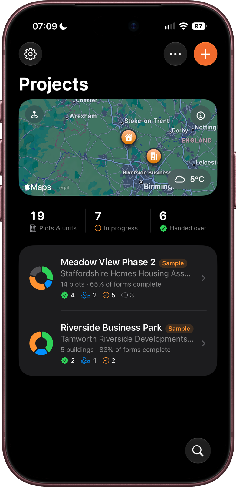
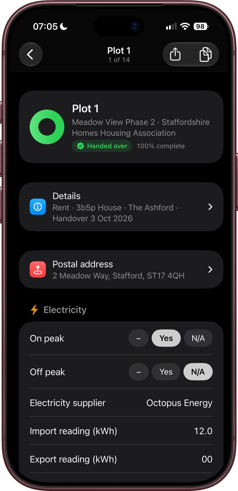
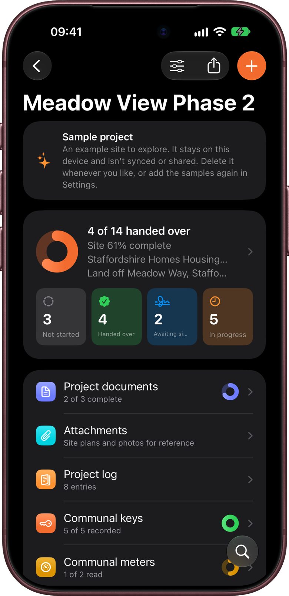
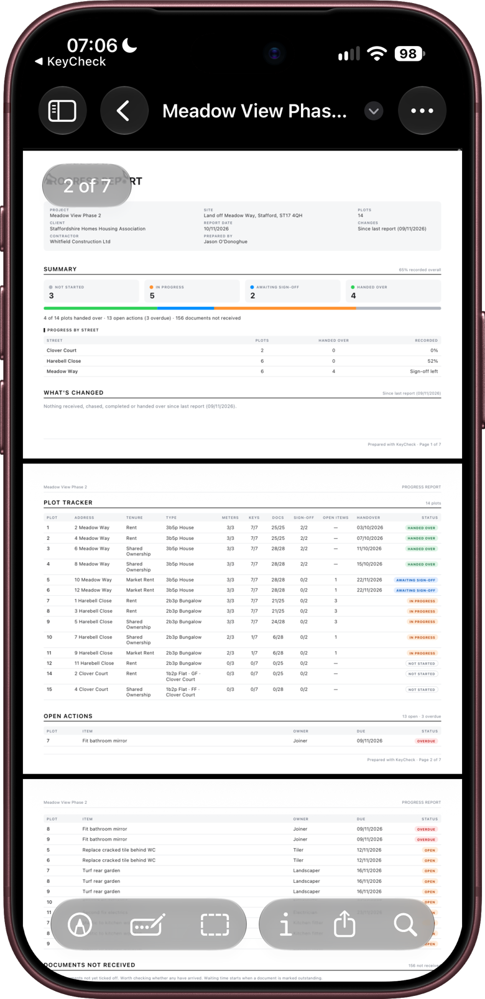

KeyCheck keeps track of everything needed to hand over new homes and commercial buildings.
On site, it records the keys, meter readings, any outstanding final snags and signatures for each plot. In the office, it tracks the paperwork that has to be in place before a plot can be handed over: certificates, warranties and planning conditions, with dates showing when each one was asked for, chased and received to provide a full audit trail.
It turns all of this into PDFs: a handover form for each plot, and a progress report for meetings and clients. KeyCheck runs on iPhone and iPad.
KeyCheck records the final snags still open at handover, not a complete snagging inspection. For detailed snag lists with photos, drawings and reports, use Snaglite, our snagging app.
Who it's for
KeyCheck is for everyone involved in getting plots ready to hand over, whether on site or in the office:
- Site managers and handover staff walk each plot with the app, counting keys, scanning meters, listing any final snags and collecting signatures.
- Employer's agents, contract administrators and purchasing agents track documents and conditions across the whole site. Much of this happens away from site, chasing paperwork and preparing for progress meetings.
- Clients, housing associations and building owners usually see KeyCheck through its PDFs: the handover forms they receive and the progress reports tabled at meetings.
This manual is written for all of these readers. Chapters about using the app on site and in the office are labelled, and the chapters on reports explain what each part of a PDF means for anyone receiving one.
Projects
A project is one site or development, such as "Meadow View Phase 2". The Projects screen lists all of your projects, with a ring showing how far along each one is.

Plots
Each project is divided into the things you hand over one at a time. On a housing site these are usually plots, but a project can use flats, units, buildings or blocks instead. This manual says "plot" throughout, but everything works the same whichever name your project uses.
Each plot has its own handover form, with these sections:
| Section | What it records |
|---|---|
| Details | Property type, house type, tenure (for example Rent or Shared Ownership) and postal address. |
| Keys | How many of each key are handed over. |
| Meters | Electricity, gas and water readings and serial numbers, with photos. |
| Instructions & certificates | The documents for that plot, such as the gas safety certificate and EPC. |
| Defects / outstanding items | Snags still to be fixed. |
| Sign-off | Signatures from the client and contractor. |
| Notes | Anything else. |

Records for the whole project
Some things belong to the whole site rather than one plot. These are kept on the project screen, above the plot list:
| Record | What it holds |
|---|---|
| Project documents | Site-wide paperwork, such as the fire strategy, warranties and planning conditions. |
| Communal keys | Keys and fobs for bin stores, cycle stores, plant rooms and communal doors. |
| Communal meters | Meters serving the whole block, such as a landlord supply or solar panels. |
| Project log | Dated notes of site visits, issues, decisions and chases. |
| Attachments | Site plans, letters, photos and scanned documents for reference. |

The form
Every site is different, so the list of keys, meters, documents and sign-off roles can be changed for each project. This list is called Form items. You can also hide items for a particular tenure, for example a document that doesn't apply to Shared Ownership plots.
Tracking essential paperwork
A plot often can't be handed over until its paperwork is complete, and waiting for documents is often what holds a handover up. KeyCheck tracks the paperwork so you can see what's missing and how long you've been waiting.
Each document is marked as one of these:
- Received: you have it.
- Outstanding: you've asked for it and are waiting.
- Not checked: nobody has looked at it yet.
- Not applicable: it doesn't apply to this plot.
KeyCheck saves the date every time a document's status changes. So without any extra typing, you can see that a certificate has been "Waiting 12 days · chased yesterday", or prove when it arrived.
This works for:
- Plot documents, which each plot needs its own copy of, such as EPCs, gas safety certificates and electrical certificates.
- Project documents, which the site needs once, such as the fire strategy or warranties.
- Bundles, for requirements made up of several separate items, such as a set of collateral warranties.
- Planning conditions, which KeyCheck can read from a council's decision notice and sort into conditions needed before work starts, before occupation, or ongoing.
Documents can be updated one plot at a time on site, or for many plots at once from the office. For example, if the EPCs for plots 12 to 20 arrive in one email, you can mark them all as received in one go.
Reports
KeyCheck makes two main kinds of PDF:
- Handover forms: one per plot, recording what was handed over, the meter readings, the documents and the signatures. These are for the client's and residents' records.
- The progress report: a summary of the site for progress meetings. It shows what's changed since the last report, every document still missing with how long it's been outstanding, the project log, and notes on each plot.
You can email PDFs, save them to Files, AirDrop them or print them.

Working with a team
With iCloud sync turned on, your projects stay up to date across your iPhone and iPad. You can also share a project with colleagues, so the site team and the office see each other's changes as they happen. For example, the site manager can tick off a snag on site, and the employer's agent sees it in the office.
iCloud sync is off until you turn it on. Your projects, photos and signatures are stored on your device and in your own iCloud. KeyCheck doesn't send them anywhere else.
KeyCheck Pro
Creating projects and making changes needs a KeyCheck Pro subscription, which starts with a 7-day free trial. Without a subscription, the subscription screen appears when you open KeyCheck, but you can close it. You can still open, read and export everything, and a View only notice appears at the top of each project.
This also applies to shared projects. Anyone you share a project with can open and export it for free. To make changes, they need their own KeyCheck Pro subscription, and you need to have given them permission to make changes.
Try it with the sample projects
The first time you open KeyCheck, it adds two example sites:
- Meadow View Phase 2: a housing site with plots at every stage, from not started to handed over and signed.
- Riverside Business Park: a commercial site, using units instead of plots.
They're the easiest way to get a feel for the app, and you can change anything in them without affecting your own projects.